Abstract
Diffusion large language models (dLLMs) have recently attracted significant attention for their ability to enhance diversity, controllability, and parallelism. However, their non-sequential, bidirectionally masked generation makes quality assessment difficult, underscoring the need for effective self-evaluation. We propose DiSE, a simple yet effective self-evaluation confidence quantification method for dLLMs. DiSE computes the probability of regenerating tokens in the generated sequence given the full context, enabling efficient likelihood estimation, robust uncertainty quantification, and flexible-length generation guided by the model's own assessment.
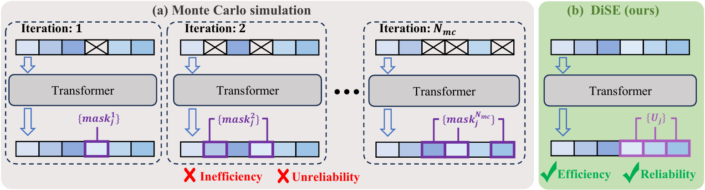
Motivation
Auto-regressive LLMs can evaluate a sequence by factorizing generation probability token by token. Diffusion language models decode non-sequentially under bidirectional masking, so conventional sequence likelihood estimation requires repeated Monte Carlo masking and regeneration. This is computationally expensive and can be unreliable for downstream selection or uncertainty estimation.
DiSE asks a simpler question: after a dLLM has produced a sequence, can the same model regenerate important tokens from the full sequence context? High regeneration probability indicates high self-confidence, giving dLLMs a lightweight self-evaluation signal without external verifiers.
Method
Sequence Regeneration Confidence
Given a sequence \(X = (x_1, x_2, \dots, x_N)\), DiSE feeds the complete sequence back into the diffusion language model. Let \(U\) denote the selected token positions used for evaluation. DiSE computes the average log-probability of regenerating these tokens:
The selected set \(U\) can cover the full sequence or task-specific local regions such as answer tokens. For conditional generation, DiSE treats the prompt and generated response as a concatenated sequence \([P; R]\), allowing the model to assess the quality of its own output in a single forward pass.
Why Regeneration Works
Although dLLMs are not explicitly trained to regenerate already-known tokens, their denoising behavior generalizes across perturbed start points. If the surrounding context strongly supports a token, the model tends to map different initial token states toward a similar target subspace, making token regeneration a meaningful confidence signal.
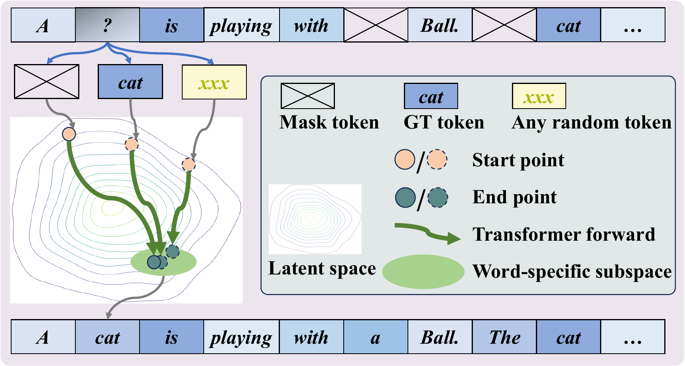
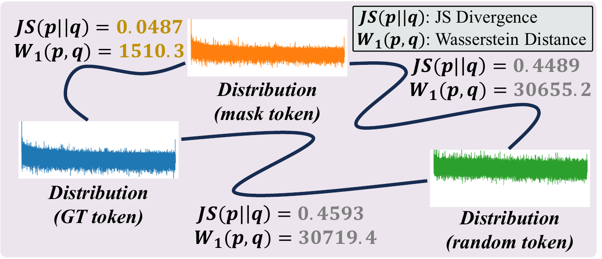
Observations
Semantic Coherence Correlates with DiSE
Natural sentences consistently obtain higher DiSE scores than randomized sentences. The effect also appears in local regions, showing that DiSE can evaluate both global sequence coherence and position-specific quality.
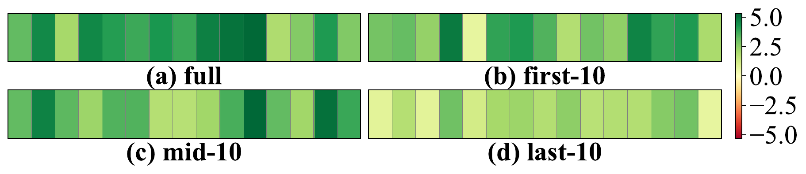
Answer Accuracy Correlates with DiSE
For reasoning datasets, correct generations tend to receive higher DiSE scores than incorrect ones. The separation becomes stronger when focusing on final answer-related tokens.
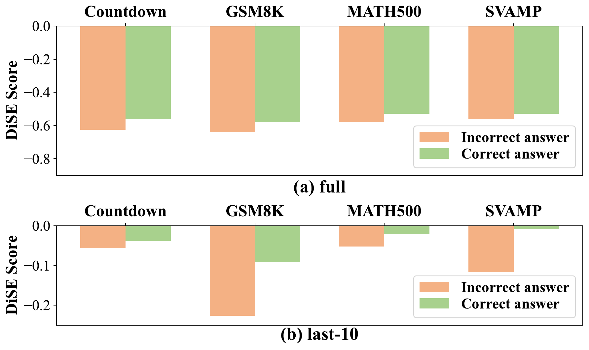
Applications & Results
DiSE serves as an efficient estimator for conditional likelihood evaluation on dLLMs.
DiSE distinguishes reliable generations from uncertain ones using the model's own score.
Flexible-length generation extends outputs only when DiSE suggests more reasoning is useful.
Flexible-Length dLLM Generation
DiSE can guide a training-free flexible-length generation framework. Starting from a base length, the model repeatedly evaluates whether the current output is confident enough; if not, it extends the sequence and reassesses.
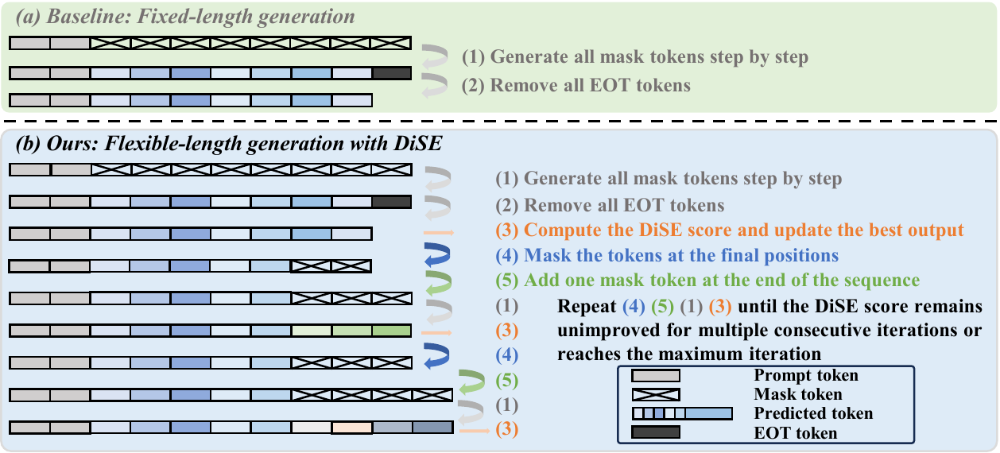
Quantitative Results
DiSE improves dLLM self-evaluation across conditional likelihood estimation, uncertainty quantification, and flexible-length generation settings.
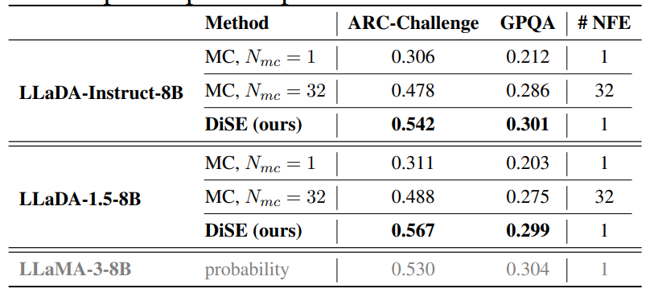
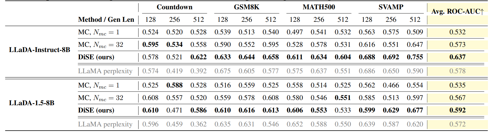
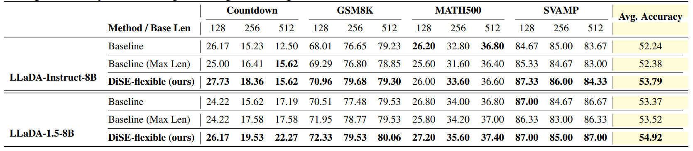
Uncertainty Quantification
DiSE provides fine-grained sequence-level uncertainty estimates. In qualitative examples, DiSE assigns higher confidence to correct answers and lower confidence to incorrect answers, while Monte Carlo estimates may fail to reflect correctness consistently.
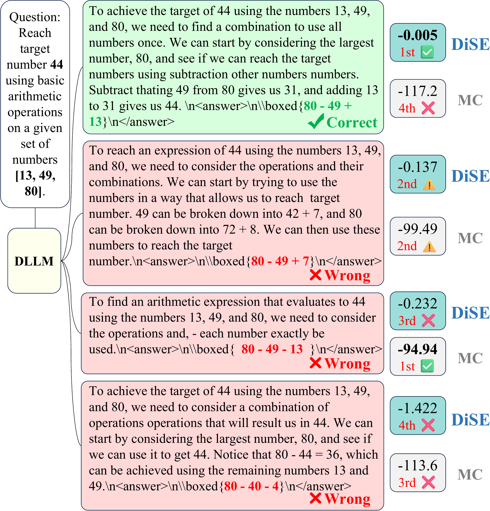
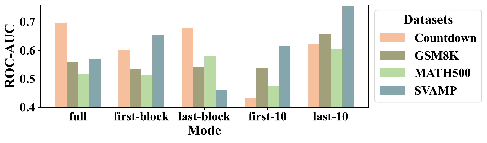
Citation
@article{zhong2026efficient,
title={Efficient Self-Evaluation for Diffusion Language Models via Sequence Regeneration},
author={Zhong, Linhao and Wu, Linyu and Wang, Wen and Xi, Yuling and Jing, Chenchen and Zhang, Jiaheng and Chen, Hao and Shen, Chunhua},
journal={arXiv preprint arXiv:2603.02760},
year={2026}
}